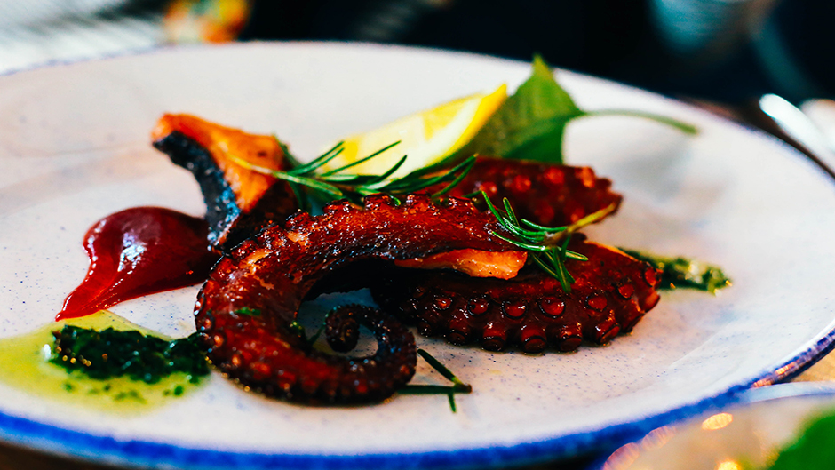
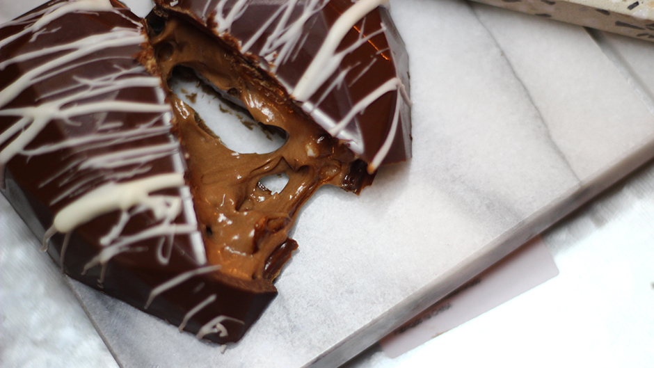
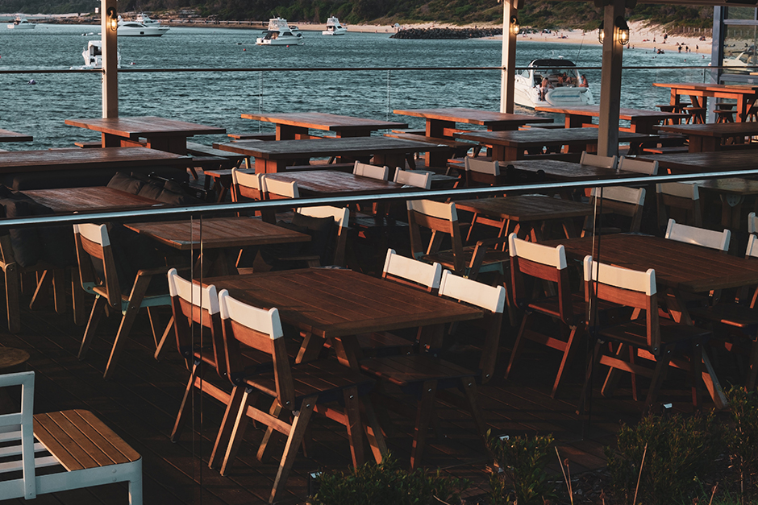

Monthly Specials
Appetizers
- Octopus
- Fresh caught octopus with green and red sauce.
- Mussels
- Mussels with black noodles and cherry tomatoes.
Entrees

- Paella
- Fresh seafood with locally sourced jalapenos, onions, red pepper over rice.
- Salmon
- Roasted with butter infused with fresh dill, served with lemon.
Dessert
- Chocolate Dessert
- Chocolate fudge covered with more chocolate, drizled with white chocolate.
Reviews
Megan, 2 days ago
★ ★ ★ ★ ★
We ate outside with an excellent view of the lake, which did not interrupt our service at all. We ordered each ordered one of the delicious specials. Will be coming again!
Chris, a week ago
★ ★ ★ ★ ★
Been coming here since they opened. Excellent food and service every time!
Dany, 5 days ago
★ ★ ★ ★ ★
My wife and went for the first time and we had the grilled octopus and calamari for appetizers. I had the Cioppino and my wife had the cold-water lobster tail. Everything was fantastic. We will be going back. Also, the service was great.
About Us
Overlooking the beautiful Lake Michigan in Evanston, IL, Brizo’s serves sustainably caught or raised seafood, sourced locally when possible, and prepared by our very own world-class head chef, Adyan Rennie, sous-chef, Arman Read, as well as their dedicated team of station chefs.
Brizo’s atmosphere provides a unique experience of modern, coastal, upscale yet relaxing vibes with its one of a kind view overlooking the lake, making this the perfect spot for special occasions, date nights, or to simply enjoy the finer things in life.